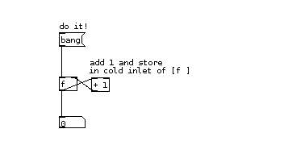

Order of Operations
The order of operations in Pd is determined by rules regarding:
- hot and cold inlets
- order of connecting
- depth first message passing
The application of these concepts appears frequently in Pd code.
Hot and Cold Inlets
The order in which inlets are triggered is largely ruled by the concept of 'hot and cold inlets'. The leftmost inlet of any object is always a hot inlet. Whatever an object receives to the hot inlet will trigger the object and create an output.
All other inlets are cold inlets. Whatever the object receives to them, it stores as a value, but does not output anything. This can be seen at work with a simple counter example:

A "bang" to a hot inlet is a special message that causes an object to process and produce output using previously initialized or set values.
In the above example, the following occurs :
- The cold (right) inlet of the float object stores the result from the addition object [+1]
- The float object does not output before it receives anything at hot (left) inlet.
- When sent a "bang" message, the float object sends a value and a 1 is added in the [+ 1] object
- The result of the [+1] object is sent to the cold inlet of [float]
- Because this inlet is a cold inlet - the value is stored until the next bang. This is why above construction does not produce an endless loop (thus crashing your Pd session or reporting a stack overflow) as shown in the example below:

Note : If there is no value specifies in the creation argument of the object inputting and outputting to and from the float, the default value will be output. For example, a float object will output 0 if no value was specified.
Order of Connecting
While multiple incoming connections to the same inlet are rarely problematic, care has to be taken when:
- the order of operations is important
- making multiple outgoing connections from a single outlet
The order of events is determined by the order in which the inlet connections were made.
Note : Since Pd does not illustrate the order of events it is not easily known by looking at the patch itself.
Trigger
Trigger is a very useful object for managing the order of events. Trigger takes an incoming value, converts it according to its arguments, and outputs the new values through its outlets in order from right to left.
Below you can see Trigger in action.

Note : you can use 't' instead of 'trigger' when creating the object.
Depth first message passing
There is one more rule of Pure Data programming that is important when scheduling events - 'depth first message passing'.
This rule states that at a forking point (as in a trigger object, or multiple connections from a single outlet) a single scheduled action is not "finished" until its whole underlying tree is "done".
Consider this simple example. Try following the path with your finger remembering that the trigger's right to left order and depth first rule:

The resulting number will be always the same as the input number as the scheduling logic is taken care of according to rules we defined so far.
Consider again the improperly connected counter example that will either crash your Pd session or report stack overflow due to the infinite loop which is enabled:
From the point of view of depth, the above example represents infinite depth - the message passing is never finished.